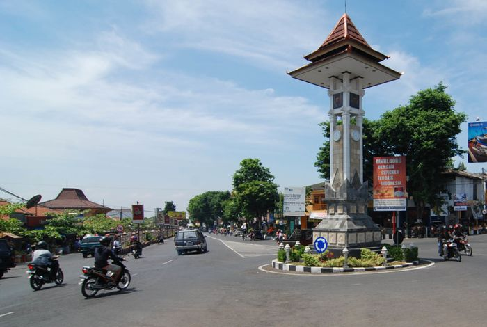

Kabupaten Boyolali
Boyolali
Kabupaten Boyolali (bahasa Jawa: Hanacaraka: ꦧꦺꦴꦪꦭꦭꦶ, Pegon: بويالالي translit. Boyålali) adalah sebuah wilayah kabupaten yang terletak di Provinsi Jawa Tengah, Indonesia. Ibu kotanya adalah Kecamatan Boyolali. Kabupaten ini terletak sekitar 25 km sebelah barat Kota Surakarta.
Kabupaten Boyolali berbatasan dengan Kabupaten Semarang dan Kabupaten Grobogan di utara; Kabupaten Sragen, Kabupaten Karanganyar, Kabupaten Sukoharjo, dan Kota Surakarta di timur; Kabupaten Klaten dan Kabupaten Sleman (Daerah Istimewa Yogyakarta) di selatan; serta Kabupaten Magelang dan Kabupaten Semarang di barat. Kabupaten ini termasuk kawasan Solo Raya.
| No | Jenis Kelamin | Jumlah |
|---|---|---|
| 1 | Laki-laki | 538.343 Jiwa |
| 2 | Perempuan | 531.904 Jiwa |
| 3 | Total | 1.070.247 Jiwa |
Kecamatan
- Ampel
- Andong
- Banyudono
- Boyolali
- Cepogo
- Gladagsari
- Juwangi
- Karanggede
- Kemusu
- Klego
- Mojosongo
- Musuik
- Ngemplak
- Nogosari
- Sambi
- Sawit
- Selo
- Simo
- Tamansari
- Teras
- Wonosamodro
- Wonosegoro
Website Kabupaten Boyolali
